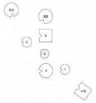
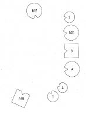
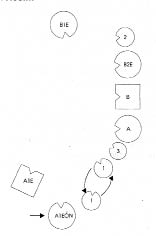
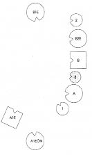
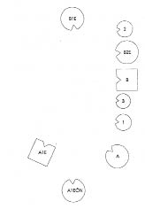

Bir kursta babasını hiç görmemiş genç bir adam vardı. Annesi gençken Paris’te bir Fransız ile tanışmış, ondan hamile kalmıştı. Bunun üzerine ailesi adamı hemen başka bir kadınla evlendirmişti. Çünkü Fransa’da evli bir erkek nafaka ödemek zorunda değildi. Adam bunun üzerine bütün köprüleri atmış, kadın onun izini kaybetmişti. Elinde ona ilişkin ne bir adres ne de ipucu vardı.
Genç adam yirmi yaşına geldiğinde annesiyle birlikte arabaya atladıkları gibi Fransa’ya gittiler. Ancak anne ile gencin büyükbabası, yani babasının babası arasında içsel bir bağ vardı, kadın da dümeni ona bırakmıştı.
Günün birinde bir köyden geçerlerken bir kapının üzerinde bu adamın soyadını gördüler. İçeri girdiler, karşılaştıkları bir kadına filancayı tanıyıp tanımadığını sordular. “Bir dakika!” dedi kadın, telefona gidip numaraları çevirdi ve “Geldiler” dedi.
Klara’ya Tamam, şimdi diz.
KATILIMCI Klara’ya Babanın ilk eşine ne olmuş? Ailesi var mı? Hayatta mı?
HELLINGER Bu burada önemli değil. Çok fazla enformasyon olmasın, yoksa doğru hissedemez olursunuz.
HELLINGER Temsilcisini baba ve anne arasına yerleştiren Klara’ya Annenle baban boşandı mı?
KLARA Hayır.
1. Resim

B Baba, annenin ikinci eşi
A Anne, babanın üçüncü eşi
B1E Babanın ilk eşi
B2E Babanın ikinci eşi, 2’nin annesi
A1E Annenin ilk eşi, 1’in babası
1 Annenin ilk eşinden çocuğu, kız
2 Babanın ikinci eşinden çocuğu, kız
3 Anne ile babanın ortak çocuğu, kız (=Klara)
HELLINGER Hemen düzeni kuruyorum.
2. Resim

HELLINGER Bu ikinci çocuk için nasıl?
İKİNCİ ÇOCUK Daha iyi.
HELLINGER Annenle yer değiştir bakalım.
3. Resim
İKİNCİ ÇOCUK Daha da iyi oldu.
HELLINGER Babanın ikinci karısı nasıl?
BABANIN İKİNCİ KARISI İyi böyle.
ANNE Benim için de.
HELLINGER Klara’nın temsilcisine En küçük kız nasıl?
ÜÇÜNCÜ ÇOCUK Demin babanın yanında biraz tuhaftı. Anne solumdaydı. Nasıl ona sırt çevirip babaya yöneldiğimi ve anneyi hiç görmediğimi fark ettim. Kız kardeş önümde dururken de, bu benim için bir koruma diye düşündüm; böylece baba ile niyetlendiğimi kimse görmez. Şimdi hâlâ biraz gerilim var anneye doğru ama onun dışında tamam.
HELLINGER En büyük kız nasıl?
İLK ÇOCUK Annenin arkasındayken kendimi çok güçlü hissediyordum. Annem ve kız kardeşlerim üzerinde etkiliydim ama kendimi yabancı da hissediyordum, ait olmadığımı. Şimdi düzene girmiş hissediyorum kendimi, artık öyle büyük bir güç sahibi olarak değil de güçlü.
HELLINGER En büyük kızın babası nasıl?
ANNENİN İLK EŞİ Demin eski eşimin arkasında dururken sağ tarafım çok ısındı ve beni sürekli ona doğru çekti. Beni buraya yerleştirdiğinde dengelendi bu. Yine de sol tarafımda bir şey eksik.
HELLINGER Tabii oraya şimdiki ailenin gelmesi gerek. -Babanın ilk karısı nasıl?
BABANIN İLK EŞİ Kendimi burada yere çakılmış hissediyorum ve sürekli “Bu da neyin nesi!” diye soruyorum. Anlamıyorum.
HELLINGER Erkeğin ikinci kadın ve çocuğu ile bağı ilk bağın önünde geliyor. İkinci eş ilkinin yerine geçmiş.
İLK ÇOCUK Demin annemin arkasında dururken kendimi büyük bir güç sahibi ama aynı zamanda da öfke dolu hissediyordum. Neden, bilmiyorum. Şimdi önceki gibi güçlü hissediyorum kendimi ama öfke de hâlâ var ve kadın sayısının çokluğuyla ilgili bu. Kendimi hepsi arasında en güçlüsü hissediyorum ama ortada bu kadar çok kadın olması beni öfkelendiriyor.
HELLINGER Başka bir şey daha denemek ve babanın nişanlısını da eklemek istiyorum.
4. Resim

A1EÖN Annenin ilk eşinin önceki nişanlısı
HELLINGER Nişanlı nasıl?
ANNENİN İLK EŞİNİN ÖNCEKİ NİŞANLISI Erkeğin solundayken başım döndü, sağında ise nefesim tıkandı. Burada, daha arkada daha iyiyim.
HELLINGER En büyük kıza Bu kadınla aranda herhangi bir ilişki var mı?
İLK ÇOCUK Şu anda buradan çıkmak, yani arka tarafa gitme eğilimi hissediyorum.
HELLINGER Önceki nişanlının yanına geç. Nasıl böyle?
İLK ÇOCUK Daha iyi.
HELLINGER Sen onunla özdeşleşmişsin.
İLK ÇOCUK Burada daha iyiyim.
HELLINGER Buna yol açan özdeşleşme. Onun duygularını taşıyorsun. Babanla annen arasındaki ilişki ile ona ihanet edildi ya. Şimdi bu grupta onun öfkesini taşıyorsun. Bunlar onun duyguları. Senin için yabancı.
Klara’ya İzleyebiliyor musun?
KLARA Evet.
HELLINGER En büyük kıza Şimdi yerine dön. Onunla özdeşleşip özdeşleşmediğini sınamak istedik yalnızca.
Klara’nın temsilcisine Sen nasılsın?
ÜÇÜNCÜ ÇOCUK Demin sırtımı hissettim, önce üst kısmını sonra da sanki geriye doğru bükülecekmişim gibi. Büyük ablamın gidişiyle ilintiliydi. Yeniden buraya döndüğünden beri o kadar güçlü değil.
HELLINGER Annenle yer değiştir bir bakalım!
5. Resim

ÜÇÜNCÜ ÇOCUK Burada kendimi daha iyi hissediyorum.
BABA Benim üzerimdeki etkisi, sanki kefeleri dengede bir terazi varmış da terazinin kolu burada, solumdaki kızdaymış gibi. Annesinin diğer yanında durduğunda terazinin kolu bendeydi. Bedensel olarak da sağa solla doğru sallandım.
HELLINGER Anne için nasıl böylesi?
ANNE Benim için çok tuhaf. Bütün bunlar beni ilgilendirmiyor. Bir şey hissetmiyorum. Ama burada, en büyük kızımın yanında daha iyiyim.
İLK ÇOCUK Kendimi anneden sorumlu hissediyorum, ama bunu istemiyorum.
HELLINGER Anne daha çok ilk eşinin sistemine ait. Üçüncü kadın olarak ikinci eşini almaya cesaret edemiyor.
En büyük kıza En küçük kardeşinin yanına geç!
6. Resim

İLK ÇOCUK Burada nefes alamıyorum. Kendimi burada çok iyi hissediyorum ama nefes alamıyorum.
HELLINGER Klara’ya Kendi yerine geç!
KLARA Dizimde kendi yerini alırken En büyük ablamla aramda güçlü bir bağ hissediyorum.
HELLINGER Doğru, çünkü ana babanıza tam olarak güvenemiyorsunuz.
Klara sarsılarak ağlamaya başlar.
HELLINGER Şimdi seninle bir alıştırma yapacağım: Babanın ilk karısına git ve önünde eğil! Hafifçe ama saygıyla eğil.
Bir süre sonra Şimdi ikinci karısına git ve onun da önünde hafifçe eğil!
Bir süre sonra Şimdi de ortanca kız kardeşine git ve onu kucakla!
Klara onu kucaklar ve şiddetle, uzun süre ağlar.
HELLINGER Şimdi büyük ablanın babasının eski nişanlısına git ve önünde eğil!
Bir süre sonra Şimdi de büyük ablanın babasına gidip onun da önünde eğil!
Klara bunu yaptıktan sonra Yerine dön ve çevrene bak! Herkese bak!
Babası kolunu Klara’ya dolar.
HELLINGER Şimdi annene git!
Klara onu kucaklayıp uzun süre ağlar.
HELLINGER Yerine dön şimdi ve çevrene bak! Herkese bir kez daha bak!
Bir süre sonra Böyle iyi mi?
Klara başını sallar.